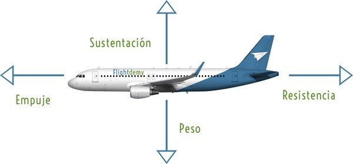
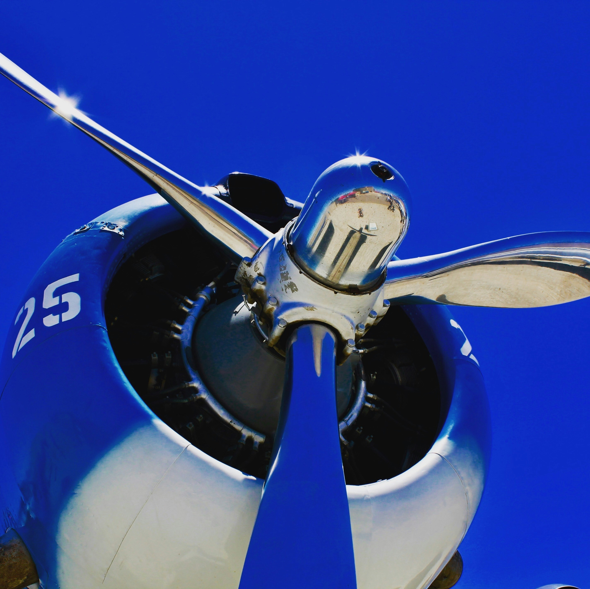
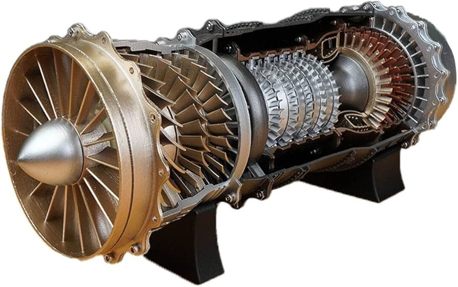
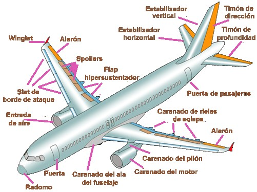

Los Principios Básicos del Vuelo
Para que un avión vuele, se necesitan cuatro fuerzas fundamentales que interactúan constantemente: **sustentación**, **peso**, **empuje** y **resistencia**.
La **sustentación** es la fuerza que eleva el avión, generada principalmente por la forma de las alas (perfil alar) y el movimiento del aire sobre ellas. El **peso** es la fuerza de la gravedad que tira del avión hacia abajo. El **empuje** es la fuerza que impulsa el avión hacia adelante, proporcionada por los motores. Finalmente, la **resistencia** es la fuerza de arrastre que se opone al movimiento del avión en el aire.
Un avión vuela cuando la sustentación es mayor que el peso y el empuje es mayor que la resistencia.
imagen del perfil alar o las fuerzas del vuelo. Por ejemplo:
 Las cuatro fuerzas fundamentales que actúan sobre un avión en vuelo.El Corazón del Vuelo: Los Motores de Avión
Los motores son cruciales para generar el empuje necesario para que un avión avance y gane velocidad. Existen principalmente dos tipos:
Motores de Hélice (Pistón y Turbohélice)
Comunes en aviones más pequeños y de aviación general. Los motores de pistón funcionan de manera similar a los de un automóvil, moviendo una hélice que "jala" el avión. Los turbohélices usan una turbina para mover la hélice, siendo más potentes y eficientes.
Aquí una imagen de un motor de hélice:
 Un motor de hélice en acción.Motores a Reacción (Turbinas)
Son los que ves en la mayoría de los aviones comerciales. Funcionan succionando aire, comprimiéndolo, mezclándolo con combustible y encendiéndolo. Los gases calientes se expanden y salen por la parte trasera a gran velocidad, generando un fuerte empuje. Los más comunes son los turbofanes, que dirigen parte del aire no quemado alrededor del motor, haciéndolos más eficientes y silenciosos.
Aquí una imagen de un motor a reacción (turbofán):
 Un motor a reacción moderno (turbofán).Partes Clave de un Avión
Más allá de los motores, un avión es un complejo conjunto de sistemas. Aquí algunas de sus partes esenciales:
- **Alas:** Generan la sustentación. Contienen alerones y flaps para control.
- **Fuselaje:** El cuerpo principal del avión, donde se alojan pasajeros, carga y la tripulación.
- **Cola (Empenaje):** Incluye el estabilizador horizontal (timón de profundidad) y el estabilizador vertical (timón de dirección), esenciales para el control de la dirección y la actitud.
- **Tren de Aterrizaje:** Permite al avión rodar en tierra, despegar y aterrizar de forma segura.
- **Cabina de Pilotos (Cockpit):** El "cerebro" del avión, donde los pilotos controlan todas las funciones.
Aquí una imagen de las partes de un avión:
 Componentes principales de una aeronave.Galería de Aviones y Motores
¡Esperamos que esta información te haya sido útil para entender mejor cómo funcionan estas increíbles máquinas!